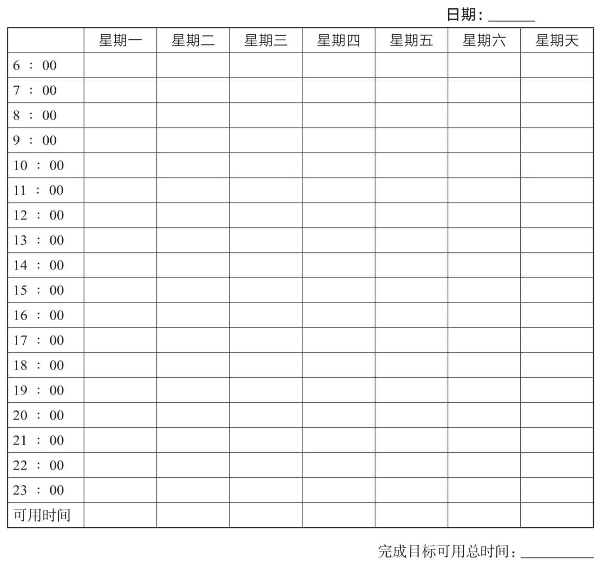
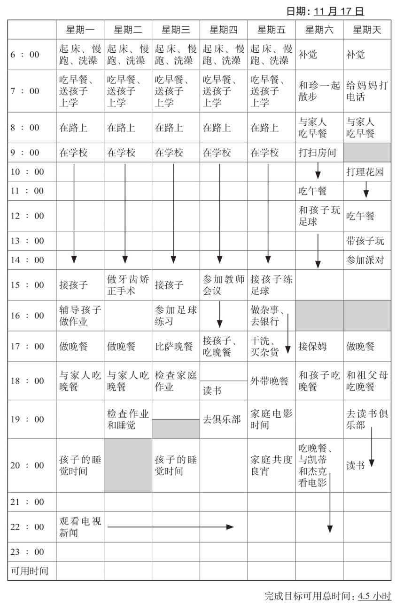

表面上看，拖延似乎是一个简单的时间管理上的问题。所以，如果安排好时间，更有效率地利用时间，你就不会拖延了吗？因为有这样的认知，很多拖延者都求助于时间管理专家。时间管理咨询已成为一个庞大的产业，你可能早就读过这个领域的大量文献，也逛过这个领域的作者、专家、教练的网站。他们通常会建议你采用日程安排系统、运用待办事项清单、设定首要任务、做出有利的选择，你可能觉得从中发现了时间管理的智慧。大多数时间管理专家都会告诉你要停止拖延，但如果正在阅读这本关于拖延的书，你就会发现，要将这些看似合理的建议付诸实施是非常困难的，如果做得到，你早就做了。但是，为什么你做不到呢？
就像第6章讲到的，时间是拖延者面临的最大挑战之一。他们或者是内心充满对时间的恐慌，或者是在一个小时一个小时、一分钟一分钟地默数时间，又或者是假装对时间漠不关心。拖延者在和时间玩游戏，并且想要从中胜出，所以他们会对自己说：“今晚我想去看电影，这不影响我明天一早就交上论文。”“时间总是有的，时间就是一种主观的感受而已。”
但事实上，在与时间的周旋中，拖延者对时间的看法是非常不现实的。他们和时间的关系是一厢情愿的，他们希望发现比客观存在的时间更多的时间，仿佛时间可以被无限拉伸而不是有限的一样。
时间是固定的、可衡量的、有限的，或许这正是拖延者最难接受的一点。根据我们的观察，拖延者喜欢待在一个具有潜在可能性的模糊王国，而不喜欢待在一个具体的、可测量的或者有限的时间框架内。当终于知道时间不够用的时候，他们会惊讶、失望甚至感到被冒犯。为了能够运用本书和其他书中的时间管理技巧，你必须先转变对时间一厢情愿的态度。
如果已经为下个星期选定了一个可操作目标，那你有没有想过什么时候开始行动呢？为了更合理地安排时间达成目标，提前做计划是明智之举，但我们知道，许多拖延者不能接受这个观念。我们不是建议你放弃自发性而成为一个准时的机器，也不是鼓励你花太多时间在计划上，但在某个时间点，你必须从计划中抽出身来并投身实践，所以我们建议你花一点时间来想一想时间这个问题。
对患有注意缺陷障碍和执行功能障碍的人而言，做计划是一件特别困难的事。对这类人来说，做计划应该格外注意，因为还要将特殊的大脑运行机制考虑进去。为注意缺陷障碍和执行功能障碍患者量身定做的相关技巧请参见第16章，那一章里的一些观念可以帮你将下面讲到的一些建议付诸实践。
提前做了计划，你就有机会以相对冷静的头脑处理事情，而不是在最后期限到来的时候惊慌失措。将做好计划轻松应对的情况和在最后时分焦急抓狂的情况做一下对比，你就会明白，不断增加的压力会对你做计划时的认知功能产生重大影响，所以，在压力到来前做计划会更有效率。相反，没有计划性容易使你因时间紧迫而产生更大的烦恼。就像最早的时间管理专家阿兰·拉金（Alan Lakein）所说的那样：“想要失败，就别做计划。”
因为计划要考虑到未来，而人们想活在当下，所以人们可能会抗拒做计划。他们可能会觉得将自己锁定在未来的某一项活动上就像落入了一个圈套，会限制他们的自由。但事实上，计划并不意味着把每天的每个小时都填满，你必须预料到意外发生的事情，同时也需要有时间享受自发性活动的乐趣和让自己焕然一新的放松体验。拖延者可能会对时间的流逝感到愧疚，于是逼迫自己有效地利用每一分钟，结果却发现他们对自己的要求太高了。也就是说，这不是计划的问题，而是压力的问题。
然而，计划是你和未来的连接，它是你最好的朋友。请允许我们再次引用阿兰·拉金的话：“计划是将未来带到当下，这样你马上就可以做一些事来创造未来。”想要让计划成为你的朋友，这个计划就必须是务实、合理的。计划必须围绕着脚踏实地做事这个核心，而不是一直盘算你应该做什么。
在为选定的可操作目标安排计划时，你是怎样腾出时间完成这些步骤的？想到即将到来的一个星期时，你知道有多少时间可以利用吗？你是否意识到了那些你曾经做出的承诺？你是否将你经常参加的一些活动（看新闻、写博客等）安排进去了？这个星期是否会有一些额外的事情冒出来，比如有人来拜访你、周末有一个研讨会或一场体育锦标赛？
在我们构建拖延工作坊的时候，心理学家尼尔·菲奥里（Neil Fiore）是我们在加州大学伯克利分校心理咨询中心的同事。他知道，很多制订了日程表的人从来都没有执行过，于是他们变得失望并最终放弃了这种做法。为此，菲奥里博士发明了一种方法，用于追踪那些不是必做事情的时间轨迹，他还创造了“非计划”这个概念。我们发现，“非计划”对来访者和拖延工作坊的参与者都很有帮助。
“非计划”是一个列出了所有必做事情的每周日程表，它可以通过两种方式帮你实现目标。首先，在提前了解有多少时间已经安排给了必须做的事情之后，你就对还剩多少时间可用于实现目标心中有数了。其次，它可以帮你在每周结束的时候做一个回顾，看看你的时间实际上都用在了哪些地方，这也有利于你进行自我监测。
“我不知道时间都跑哪里去了。”从第二天开始，想一想接下来的七天。运用本书后面的每周非计划日程表（见表13-1），事无巨细地将你在接下来的一个星期内要做的可以预见的活动都写下来，在那些你知道会有事发生并占据你时间的格内做好标记。如果你确切地知道什么时候会做什么，那就把它记在相应的空格内。例如，一次午餐聚会，星期二，12:00～13:00。如果你不能确切地预料到做事的时间，那就估计一下它会占用多少时间，然后在可能会做这件事的那天标示出来。将所有已经安排好的事务都包括进去，比如晚间回忆时间或某个社交活动。除此之外，还要将日常活动标出来，比如买菜、给汽车加油等。
表13-1 每周非计划日程表
将生活中的所有事项都考虑进去：工作，安排好的会议和约见，上课和社交活动，锻炼身体，用餐（包括准备和洗碗），做家务（清扫、洗衣、购物等），为朋友、伴侣或孩子专门空出来的时间，睡觉。如果你经常观看晚间新闻、星期一晚间足球赛或者其他电视节目，也把它们记下来。也不要忘了看报纸、上下班和出外旅行的时间。用日历来提醒自己的这些事务，因为你很容易忘掉某些事。如果你觉得自己可以凭脑子记住所有事，那就太自以为是了。表13-2是中学历史教师索尼娅的每周非计划日程表，她在给学生的期中论文评分这件事情上有点拖延了。
表13-2 每周非计划日程表
记住，不要将应该做的事情写下来，不要将你希望开始追求可操作目标的事情写下来，也不要将你认为应该给老朋友发一封电子邮件的事情记下来。如果你是一个学生，那就不要写你希望开始做作业。我们不是要你保证去做什么额外的事，而是要你确认在即将到来的一个星期里已经安排好了哪些时间。
填写完这张每周非计划日程表后，再仔细检查一遍。这个日程表代表了你下个星期的生活，当你看到接下来七天的安排，你有什么感受？你是否被这些要做的事搞得心烦意乱？你是否对那些没有安排事情的时间感到忧心忡忡？你是否因为时间很少而感到闷闷不乐？在想象自己如何度过这个星期的时候，思考一下自己的感受，并思考一下这份日程表中有什么因素导致你产生了那样的感受。
根据这张日程表，你可以了解自己有多少时间可以用于完成目标。这张每周非计划日程表显示了你可以利用的时间，其中的空格反映的就是你没有被安排掉的时间。当然，没有人会把所有未被安排掉的时间都用于完成目标，但这至少显示了一共有多少时间是你可以利用的。
一位设计工程师将向客户递交设计稿作为一星期可操作目标，他计划每天花3个小时在这件事情上。可是，在填完这张每周非计划日程表后，他发现自己每天根本就挤不出3个小时的时间！就这张日程表来看，他的目标是无法实现的。通过了解自己有多少时间已经被安排好了，他明白自己没有机会取得成功。也就是说，他要么修改目标，要么修改日程表。
或许你是一个有大量时间未做安排的人，比如有些人是在家工作的，有些人的工作是兼职，有些人从事的是自由职业，也有些人失业了，这样的人或许会发现他们面对的是一大片空白时间。对拖延者而言，这样的空白时间会让他们产生焦虑感，因为这意味着他们必须自己安排好时间框架来完成某件事。
通过这张每周非计划日程表，你也会对自己目前是怎样管理时间的有所了解。例如，在没有填这个日程表之前，有一位优秀的研究生完全没有意识到每天8点50分起床去赶9点钟的课在时间上太紧张了，也难怪他在每件事情上都会迟到！
在检查日程表的时候，人们有时发现很多时间都被社交和娱乐活动占据了。这些拖延者已提前找好了借口，这样当时机到了的时候，他们就会认为必须要先完成一些设定好的事务，而没有认识到自己其实是在拖延。一位杂志编辑这样说：“我在工作之后安排了很多社交活动，这样我就不用面对什么时候开始写书的问题了，我几乎没有什么时间可以用于完成自己设想的目标。”
仔细看一下你的每周非计划日程表，你的生活中是否丢失了什么？有些拖延者不允许自己有任何娱乐的时间，由于老是拖延，他们觉得自己不配得到休息的时间。再看看那些从一项娱乐活动跳到另一项娱乐活动的人，如果是用娱乐来逃避工作，那他们可能并没有在这些疯狂的消遣中感受到多少真正的快乐。举个例子，埃米是一位房地产经纪人，她认识到：“我并没有开心起来！对这些必须做的工作，我感到非常内疚，我觉得我不应该花任何时间在娱乐上，难怪我一直这么紧张。”
在为可操作目标或其他项目努力的时候，你可以使用每周非计划日程表来记录自己的进步。工作半个小时，就在日程表上涂掉相应的半格。工作1个小时，就涂掉整个格子（有些人还喜欢用不同的颜色来追踪不同的任务）。然后，将那个星期你花在完成目标上的时间加起来。例如，如表13-2所示，为了完成目标，索尼娅星期二工作了1个小时，星期三工作了半个小时，星期六和星期天各工作了1个小时，一共4.5个小时。如果你喜欢用更小的时间单元来记录自己的工作，那么可以每工作15分钟就涂掉1/4个格子。
在你为完成目标工作了一段时间后，记得要将你的进步记录下来。一个星期下来，你也许会发现你的进展和你所预想的不一样，因此你涂掉的格子可能会出现在你原本安排了其他事情的时段里。以这种简单的方式跟踪目标的进度有几个好处。第一，当你记录下自己的进步，你就会把注意力放在已经完成的事情上，而不会老是对自己发誓什么时候开始工作或者发誓要在这上面花多少时间。如果不能兑现你的誓言，那你只会感到挫败，可当你将你实际做的事情记录下来时，它更有可能给你一种成功的经验。以这种方式监测自己的进步，使你能够看到事情积极的一面，你会看到“杯子是半满的”，而不是“杯子是半空的”。第二，那些被涂掉的空格可以看成对你的有效行为的一种奖赏。在做完事之后，你记录得越及时，奖赏的效果就越显著，而减轻拖延的一个重要因素就是快速地给予奖赏。在工作了15分钟、30分钟之后，将你的努力记录下来，这就是一种及时的自我奖励。
随着一个星期的时间逐渐过去，当看到被涂掉的格子越来越多，你投身于工作的积极性就会越来越高涨。一位受益匪浅的拖延者这样说：“这些标记就像小学时的五角星奖励一样，每涂掉一个格子我都有一种心满意足的感觉，于是我一心想再多做一点。”
在工作30分钟后将这个进步记录下来是一种很好的方式，可以让你认识到，即便是30分钟的努力也是有价值的。你没有必要等到有了充足的完成任务的时间才开始行动，而每周非计划日程表恰好展示了你可以利用的零碎时间，并且协助你为每30分钟的努力而奖赏自己。
将你为达成目标而工作的总时间记录下来也是自我监测的一种方式。研究显示，自我监测有助于增加工作时间和提升工作成就。此外，自我监测还能让拖延者的时间观念变得更现实——对在达成目标上所用的时间进行统计就是面对现实的一种表现。如果你一个星期只花了1个小时在完成目标上，那你就无法欺骗自己，认为自己已经做了很多事。而如果花了4个小时在这上面，那你也无法假装自己一事无成。你或许会发现，你对自己所作所为的感觉和这些数字告诉你的事实并不相符——你可以做10个小时的事而没有一点成就感。但是，如果将这些时间记录下来，那么至少你面前有一个有形的证据可以说服你不要失望。你可以用这种客观的选择对自己怎样运用时间的主观认识加以纠正。
练习判断时间。你能精确地预测完成一件事需要多少时间吗？有些时候，人们会低估一件事所需的时间，认为“我可以用两个晚上看完《战争与和平》”，或者“退税的事几个小时就可以搞定”。还有些时候，人们会高估一件事所需的时间而将其不断推迟，因为他们认为“我现在没办法做这个，它很费时间”。在这两种情况下，结果都是一样的，就是人们会无所事事。
大脑也会影响人们精确判断时间的能力。当缺乏多巴胺时，大脑中监测时间间隔的时钟就会失灵。判断时间的能力还会随着年龄的增长而下降。如果有以上的情况，你可能需要在时间判断上多多练习。
有一个办法可以克服对时间的主观观念，并提高对时间的判断能力，那就是将你对所需时间的预测与实际使用的时间进行对比。例如，预估一下从早上听到闹钟铃响到离开家所需的时间，然后拿它和你实际记录的时间进行对比。或者，猜测一下你开始工作时要花多长时间处理电子邮件，然后看看实际用的时间是多少。你也可以估计一下驾车穿过城镇所需的时间。纽约市有一位商人，也是一位拖延者，他计划驾车去长岛，他在安排日程表的时候预计：“如果不堵车的话，要花45分钟。”这个估计或许没错，但问题是，难道他一定不会碰到堵车吗？
学会利用零碎时间。阿兰·拉金有一个很好的建议，他在《如何掌控自己的时间和生活》（How to Get Control of Your Time and Your Life）一书中描述了一个叫瑞士奶酪法的时间管理方法。他建议在处理比较大的任务时使用“见缝插针”的方法，就是利用零碎时间，而不是消极等待整块的时间段出现。这个方法对启动项目和启动之后使之保持连续性都有非常大的好处。
瑞士奶酪法的意义在于它看重任何一段时间的价值，无论这段时间多么短都一样重视。或许你的目标需要10个小时来完成，但这并不意味着你要等到一整块10个小时的时间出现才开始，只需要15分钟、10分钟甚至5分钟你就可以完成很多重要的步骤。如果觉得无法承受，那你可以花1分钟做一个列表。如果你在回避那个有很多事等着做的办公室，那么你可以在里面站15分钟，持续呼吸并逐渐习惯这个环境。如果你有很多整理工作要做，那可以先花几分钟将柜子里的文件夹整理一下。任何一个步骤都比回避的行为更有效，至少你又往前迈进了一步。
你或许会对能发现这么多零碎时间感到惊讶。如果某个同事取消了和你原定30分钟的约见，那么这段时间就是你可以支配的。如果在打完电话后和离开办公室前还有10分钟，那么你就可以将它利用起来。
瑞士奶酪法对拖延者有几个特别的好处。一方面，它很务实。相比于大块的时间，你更容易时不时地找到15分钟、30分钟这样的零碎时间。如果一定要等待一大块空闲时间出现，那你可能就会这样一直等下去。
另一方面，当你利用零碎时间，你就无意中有一个时间上的限制。为自己设定时间限制是针对拖延者的一个很好的练习，它有助于克服一些不切实际的想法，比如认为有很多时间后就能集中所有精力去完成任务。像这样的时间段和这样的精力很少会出现，而同时出现的可能性就更低了。
时间限制也让一项任务显得更容易接受。你的任务或许很困难或者令人厌烦，你很可能做事超过15分钟就会受不了。如果你认识到开始做事并不意味着无穷无尽的折磨，那么讨厌的事情就不会显得那么讨厌了。而且，当你确实设法完成了一点任务的时候，你对它的感觉就有可能会有所改观，这种因取得进步而带来的满意实际上就是一种奖赏。记住，因做成某些事情而产生的良好感觉会促使大脑释放相关的化学物质，从而增强你的身心协调性。这样，为了再次有良好的感觉，你就会希望重复这样的经验。
瑞士奶酪法和你用工作来惩罚自己的做法正好形成鲜明的对比。如果你拖延了某件事，那么为了赶上进度，你就有可能宣判关自己一个周末的禁闭。但是这种禁闭会让你觉得自己好像被拴在办公桌前无法动弹，而别人都在看足球赛或者在海滩上玩耍。一想到有这样一个孤独而辛苦的周末你就会感到厌烦，所以你会设法躲避。经验也证明了这样一个研究结果：惩罚起不到激励作用，胡萝卜政策要比大棒政策管用得多。
如果你的拖延是出于意志上的挣扎，那么，利用零碎时间做事就是一个特别管用的办法。如果你的拖延是因为你不喜欢被控制，那么拖延就成了你的一个声明：“你无法让我做这件事情。”如果做了这件事情，你的自由感和独立感就会受到威胁，但如果你决定自己来设定时间上的限制，决定做10分钟或者5分钟的事，那么你就重新赢得了你所需要的控制感，你就会继续往前迈进。
利用零碎时间能提升你的工作效率。一位十分喜欢这个方法的大学教授说：“我把厨房定时器都设定为1个小时，我将这个方法用于所有的事情，从批阅论文到清理壁橱。这让我勇往直前，并且我也可以看到胜利在望！”但是，也有一些人不是那么容易被这个方法改变，如果不能马上看到有形的结果，你就会觉得最初跨出的几步毫无价值。你或许会觉得每次做一点点不是很光彩，它不像一鼓作气征服目标那样令人激动。一位无法很好地运用这个方法的律师这样告诉我们：“除非有足够的时间来完成它，否则我会拒绝着手做事。我能明白设想得太好对提高效率没什么用，但每件事我都是这样做的。”这里再次提醒诸位，“非此即彼”的观念对拖延者而言始终是一个不断出现的障碍。如果你让自己认识到“小有所成”也有其价值，那么利用零碎时间就会让你事半功倍。
预防意外干扰。根据墨菲定律，“所有可能出错的事情都会出错”。但是许多拖延者并不相信这个经验法则，他们认为一旦自己下定决心专心做事，这个法则就不会在他们身上应验。你可能会回想起在你拖延以及事情最后处于一团糟的情况下所发生的某些事。一个电话或者一份放错地方的文件，这些没有预料到的事情会让你晕头转向，失去平衡。为什么你没有为可能出错的事情做好准备呢？为什么认定你的个人努力是唯一要考虑的因素呢？一旦克服自己的抗拒心理，准备好去做事，你或许就会期待一切都会顺顺利利的。不幸的是，这个世界并不是围绕着你的设想运转的。
泰勒在星期一下午有一个工作面试。在面试之前的一个星期里，他知道自己应该将西装拿到干洗店，但他没有做这件事，而是花了一个晚上的时间研究这家可能雇用他的公司的财务状况。到了星期一早上，他一早就起了床，赶着将西装送到干洗店，因为在上午七点半之前送过去就可以在下午一点之后取。下午一点半，在去面试之前，他身穿衬衫、领带、一双好皮鞋和一条牛仔裤先来到了干洗店。但是他们找不到他的西装，可能还在洗，也可能有人将号牌搞错了。泰勒冲到柜台后面的洗衣区，心急火燎地搜寻他的西装。结果是，他不得不在最后一刻取消了这次面试。当然，他也没有得到这份工作。
不幸的是，这个世界并不会注意到你处于紧急状态，事情还是会以它们通常的概率出错，你所能控制的范围是有限的。如果碰上严重的交通拥堵，你就无法准时到达机场。如果电脑崩溃了，尤其是当你拖着没有将文件备份的时候，就无法及时将相关的数据交给经理以备会议之需。如果得了感冒，你就无法在晚上高效地学习。如果提前知道任何事情都会有意外情况发生，你就站在了一个有利位置，随时准备跨越障碍，而不会被困其中，不会埋怨运气不好，也不会责备自己。
分派任务。分派任务是提高时间使用效率的一种方法。如果将一部分工作交给其他人，你的负担就会有所减轻，并且还可以有时间专注于其他一些事项。分派任务的流程是：找出你不必做的事情，找到一个可以做这件事的最佳人选，明确需要做的具体内容，跟踪事情的进展。
对此，时间管理专家有一个一致的建议，那就是将事情分出轻重缓急，然后把时间用在最重要的事情上。不那么重要的事情可以分派给其他人做，甚至可以先放在一边。著名时间管理专家德鲁克说：“重要的事情先做；其他事情根本不用考虑。”史蒂芬·柯维（Stephen Covey）提出的高效人士的第三个习惯就是“要事第一”。你应该将时间用在最需要你专注的最重要的事情上，而将不那么重要的事情分派出去。
时间管理专家的这个建议很有实际意义。你大概会认为拖延者一定会迫不及待地将自己的负担卸下一部分，但当我们问及他们会将哪件事分派出去时，他们通常并不会因此感到轻松，反而会拒绝这样做。为什么？以下就是拖延者不将事情分派出去的几个原因。
第一，认为“我应该能完全靠自己来做这件事。”出于对完美的追求，你会认为绝不应该寻求他人的帮助，所以对你来说，分派意味着你没有担负起自己的职责或者你不是那么能干。有一位律师这样说：“在我参与一个重要的案子时，我想雇个人帮我打扫房间。但是我认识一些职业女性，她们能够把工作和家务都打理得井井有条，所以我应该也能做到。”
分派不是失败的表现，而是一种技巧。真正的失败是生活中每件事都要固执地亲力亲为，这样做只会有一个结果，那就是你只能完成其中的一半。
第二，认为“我是能够做好这件事的唯一人选”。这又是一个完美主义的陷阱。虽然可能有些事情确实只有你才能做好，但难道每件事都是如此吗？即便其他人不按照你的方式做事，能够以另一种方式将事情做完也总比拖着不做好多了。做了分派，你就会失去全面的控制。但为了完成一件事，你或许就要忍受这种失落感。
第三，认为“分派是逃避”。在寻求帮助的时候你可能会有负疚感。你可能认为，因为你一直做得很糟糕，所以这次必须做得很出色才能弥补以前的不足。你可能觉得自己不值得被帮助，所以无法将事情分派给他人或者依赖他人。
如果你想继续拖延，并以受难者的身份出现，那么拒绝帮助是一个好办法。一位慈善组织委员会的成员这样说：
在委员会中，我是唯一一个没有做好会议准备的人，我感到很丢脸，所以没有和任何人谈起它。他们都做了自己的那份工作，为什么还应该帮助我呢？我只想在下一次好好地准备一下，但到了下一次，我还是没有做好准备，所以我没有去参加会议，后来我就离开了这个委员会。
这种禁欲主义和自我惩罚型的心态和做法并不会提高你的工作效率，只会增加你的压力和苦恼，而增加压力就是给自己添麻烦。
第四，认为“我可能会将错误的事情分派给错误的人去做”。即便认同有些事情需要交给其他人去做，你也会在分派什么事情以及分派给谁上犹豫不决。你最好将事情分派给那些有能力帮助你、对你不怀恶意以及不是拖延者和完美主义者的人。同时，将那些不需要你持续监督以及你曾经做过的事情分派出去也是很有好处的。但是，如果认定只有一种正确的分派方式，那么你就会从很多角度考虑这件事，寻找一个完美的解决方案，这都无助于你做出最后的决定。无论是平庸的事情还是重要的事情，一旦交付出去，你的负担就减轻了。
第五，认为“我将无路可逃”。想象一下，如果这些现在将你带入泥淖的事情都交给帮助你的人去做，事情会发生怎样的变化？没有了这些紧急事务的压力，在你与这些真正重要而你一直回避的事情之间就少了很多障碍，你就会面对面地遭遇到内心的恐惧。所以，事先给你一个警告，当将许多待办事项削减下来之后，你首先感受到的不是轻松，而是焦虑。但如果你能坚持，如果能直面和深入内心的恐惧，你终将会如释重负，一身轻松。
不要太分散精力。我们认识一个叫易生的大学生，他选修了18门课，参加了学校里的乐队和足球队，同时还经常回家看望女友。他只能在来回的路上和在乐队训练、足球训练的间隙挤出时间学习。虽然易生宣称学业是他的首要任务，但他的所作所为让人觉得他似乎将学业排在了最后一位。
很明显，如果真的想提高学习成绩，易生必须放弃些什么，比如不要再参加乐队或足球队，减少一些选修的课程。但是，当我们这样向他建议时，他拒绝了，他什么都想做到，不想错过其中任何一件事。
过于忙碌本身是否就是拖延呢？如果像易生那样，利用忙碌来逃避更为重要的事情，那么你可能就是在拖延。当你要做很多事情的时候，你不仅培植了一片使拖延得以滋生的土壤，还为自己准备好了拖延的借口：“我并没有在拖延，我只是太忙了，无法及时完成每一件事。”
认真看一看你给自己摊派的事情（每周非计划日程表在这方面非常管用）。你的精力是否太分散了？这是否成了在真正要紧的事情上拖延的一个陷阱？在这些事情中，是否有一部分你可以放弃？在这个过程中，你可能会失去一些东西，但相对于完成一个更大的目标而言，这是不是一种必要的牺牲？
在有全职工作的情况下写作本书第1版的时候，我们花费了一定的代价才学到这个教训。猜猜当时发生了什么？我们根本没办法写书！除了被拖延诱惑，我们感觉也非常差，因为进展非常缓慢。最后，怀着极不情愿的心态，我们决定用一半时间工作，一半时间写书。这个决定被证明是有效的。虽然很怀念同事和工资，但我们终于有足够的时间来写书了。
找出你的最佳时间。如果你向自己保证，要在每天早上工作之前花30分钟的时间锻炼身体，但你不是一个早上能爬得起来的人，那么你就几乎不可能说到做到。每个人都有自然的生物钟，想一想一天当中什么时候你的脑力最旺盛，什么时候体力最充沛，什么时候最适合社交，还有什么时候精神最差。如果一天工作之后，你所剩下的力气只适合小憩片刻或者读一本别人写的小说，那么，强迫自己每晚写小说就毫无意义。
说到这里，你或许已经认出拖延者的问题在哪里了：找出最佳时间意味着承认有些时间不是最佳的。这就等于承认你不能在所有的时间都以最佳状态工作，也不能在任何你认为你应该有最佳表现的时间里做出最佳表现。这意味着人类的局限同样在你身上存在。
学会在过去、现在和未来之间取得认知上的平衡。不要黏滞在时间中，这一点很重要。如果黏滞在过去，你就无法享受现在，也不能为未来做打算；如果黏滞在现在，你就处于当下时刻的控制之中，而失去了与过去和未来的联系，你也无法从自己的经验中受益；如果黏滞在未来，你就被锁定在一个幻想的世界，无论这个幻想是正面的还是负面的，你所能做的都只有计划或者担忧。在《时间的悖论》（The Time Paradox）一书中，菲利普·津巴多和约翰·博伊德（John Boyd）强调在时间坐标上取得某种平衡的必要性，他们也为如何重新设定你的时间观念提供了很多建议。
享受你的“自由”时间。拖延者无法有效率地工作这一点是很明显的，但是我们经常会忽视另一点，那就是他们在放松和娱乐上也存在问题。即便在该工作的时候沉迷于娱乐活动，很多时候你也无法尽情享受，因为你知道自己是在利用娱乐逃避某些事情。有时候，你甚至都不允许自己有这样的心情转移，因为你觉得自己效率很低，所以不配去参加娱乐活动。无论是哪种情况，你都无法让自己真正开心起来。
开心与愉悦在生活中是极为重要的。试着安排一些让你开怀的时间，不要让自己处于内疚或绝望的心态。不管你觉得自己多么堕落，每个人都需要给自己留出一点玩耍的时间。如果剥夺了自己放松的权利，你就会像用完了油的汽车一样无精打采。而且，你会通过拖延的方式来窃取休闲的时间。